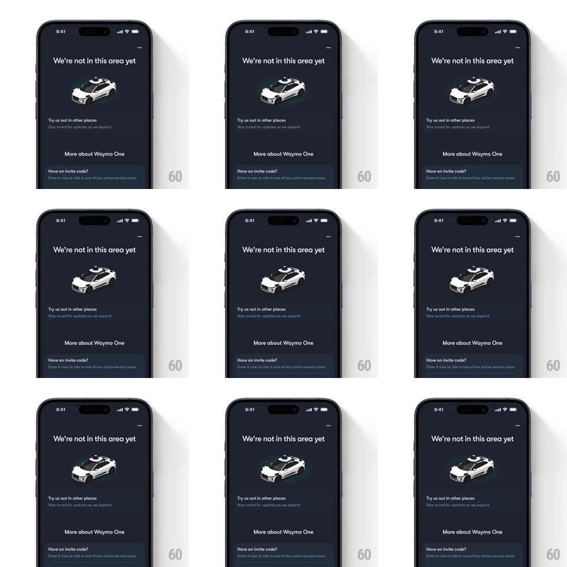

Media
Frame-by-frame

Rebuild this animation 1:1: Waymo's unavailable-area empty state - a 3D car illustration under the "We're not in this area yet" heading with a teal radar pulse radiating outward in soft rings.

Rebuild this animation 1:1: Waymo's unavailable-area empty state - a 3D car illustration under the "We're not in this area yet" heading with a teal radar pulse radiating outward in soft rings. ## Integration Integration: stack-agnostic spec - springs given as stiffness/damping, timed motions as duration + curve; map every value to your framework and animation library of choice. ## Scene Dark navy screen: "We're not in this area yet" heading, a white 3D car (roof lidar puck) centered in a teal glow, "Try us out in other places" with supporting copy, "More about Waymo One", and an invite-code section at the bottom. ## Motion spec Pattern: looping radar pulse, ~2.4s per ring. - Pulse: concentric teal rings spawn at the car and expand outward (scale 1 -> 3, 2.4s, ease-out) while fading (opacity 0.5 -> 0); a new ring starts every 800ms so three are in flight. - The glow disc under the car breathes (opacity 0.25 -> 0.4, 2.4s, ease-in-out). - The car and all copy are static - only the rings and glow move. ## Calibration - Rings are clipped to the glow region around the car, not the full screen. - Ring spacing stays even: 800ms spawn, 2.4s life. ## Reduced motion Static glow, no expanding rings. ## Don't miss - The pulse reads as radar from the lidar puck - rings center on the car's roof. - Three rings in flight at once, evenly spaced.